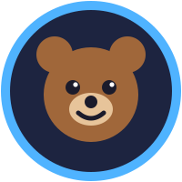
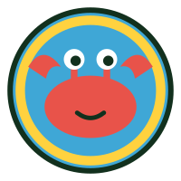

Free for children aged 6–11
Movement quests that make kids want to come back
Kids help six animal creatures grow stronger by practising real skills: crawling like a bear, hanging like a monkey, hopping like a kangaroo. Ten to fifteen minutes, three times a week.
Open HypeCubsWorks in your browser on phone, tablet or computer. Add it to your home screen to use offline.
Meet the crew

BearTummy and coordination MonkeyGrip and pulling
MonkeyGrip and pulling KangarooLegs and bones
KangarooLegs and bones
CrabBack and shoulders FlamingoBalance
FlamingoBalance GorillaPushing strength
GorillaPushing strengthHow it works
Real skill levels
Each creature has five levels, from Cub to Legend. Do every round and the target creeps up. Reach the top and the creature evolves. Levels never go down.
Phone down, move
The app gives the mission, then gets out of the way: a big timer or an "I did it!" button. Kids move, not stare.
Praise for effort
The coach cheers effort and brave tries, never "talent". Too tricky twice? It switches to a practice version.
A story to finish
Every quest unlocks a chapter of The Lost Forest, and kids choose the path.
Playground Quests
Tick what's at your park and get a 5-minute quest using the monkey bars, benches and lines.
Teach a Grown-Up
Once a creature reaches Ranger, your child becomes the coach and teaches you a move.
Why these moves?
UK guidance says children aged 5–18 should do activities that build movement skills, muscle and bone strength across the week. HypeCubs focuses on exactly that slice: hanging for grip, jumping for bones, crawling for coordination, balancing and pushing. It's not a replacement for running about, sport or play. It's a fun extra.
Every move is bodyweight only. No weights, no maximum tests, and no talk about weight or body shape. Ever.
Safety and privacy
Grown-up setup
A short health check (not saved), safety promises, and a grown-up gate on all settings.
Stop rule
Kids learn to stop and tell a grown-up if anything hurts, they feel dizzy or can't catch their breath.
Nothing leaves the device
No account, no names needed, no ads, no in-app purchases, and no analytics on any children's screen.
Questions
Does it cost anything?
No. HypeCubs is free, with no adverts, subscriptions or in-app purchases.
What age is it for?
Ages 6–11. Cubs (6–8) get 2 rounds and instructions read aloud. Explorers (9–11) get 3 rounds. From 11, HypeReps, our app for teens and adults, is the next step with a grown-up's OK.
Do we need equipment?
No. If your child can use monkey bars or a secure pull-up bar, the Monkey moves use it. If not, they get floor versions.
We live in a flat. Can we avoid jumping?
Yes. Switch on Quiet mode and every jump is swapped for a quiet move.
Can siblings share one device?
Yes. Add a profile for each child in the Grown-ups area.
What data do you collect?
From the app: nothing. Progress is saved on your device only. On this information page we use Google Analytics, but only if you click Accept. See our privacy policy.